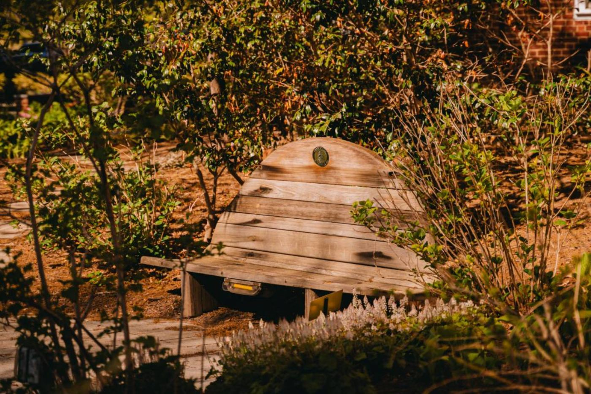

The heart of your Sacred Place.
Your Nature Sacred Bench is at the heart of your Sacred Place—a place to pause, reflect, connect, and share through the Little Yellow Journal. Here you'll find simple resources to help care for your bench, along with an easy way to reach us when it needs a little extra attention.
Simple instructions for routine care and maintenance.
Need bench help?
Let Nature Sacred know about damage, repairs, maintenance needs, or other bench concerns.
Request Bench SupportThe Nature Sacred Bench is made to invite you in. Its curved back and soft lines encourage visitors to sit and stay awhile, while a special pocket holds the Little Yellow Journal. It's not only a place to rest—it's a place to reflect, connect, and be heard.
Since the very first Sacred Place, every one has included a Nature Sacred Bench and Journal—a shared element connecting Sacred Places and the people who visit them across the Network.